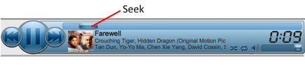

To seek the playback position to a specific time position in the current track click on the Seek slider and still holding the mouse button down slide the bar to the desired position. Release the mouse button to set the position.
Alternatively, you can click on anywhere along the length of the Seek bar and the slider will jump to that position and still holding the mouse button down slide to the desired position and release.
If you don't want to change the position once you started sliding the Seek slider then, still holding the mouse button down, slide the cursor of the Seek bar.
The time display will change as you move the slider to show the time position of the Seek slider’s current position.
